Como utilizar etiquetas, pacientes, consultas, agenda, eventos, formulários, financeiro, fiscal, relatórios e usuários — com capturas reais das interfaces de teste e procedimentos passo a passo.
Prioridade: etiquetas. As primeiras cinco rotinas demonstram inserção automática, impressão Link 9027, PDF A4, arte, calibração, backup e uso no celular.
Manual de referência: 10 de novembro de 2026. Ambientes retratados: interface de etiquetas candidata isolada + ambiente autenticado de homologação do consultório.
Segurança: o sistema principal ainda possui pendências de GO-LIVE. Os prints usam dados de demonstração e não autorizam usar pacientes reais na versão de testes. O módulo provisório de etiquetas público permanece sem login até nova publicação autenticada.
Produzido a partir de execução real das telas, do repositório canônico e de testes de UI. A disponibilidade de um botão pode variar por perfil e versão publicada.
Índice das rotinas
O manual começa por etiquetas e percorre os módulos administrativos do consultório. Clique em um título para navegar quando o leitor PDF oferecer suporte a links internos.
CAMINHO NA INTERFACE /etiquetas (candidata; ainda não publicada)
Abra o módulo Etiquetas, depois confirme o evento existente ou crie um novo em Novo evento.
Na caixa Nomes (um por linha), digite ou cole os participantes, cada pessoa em uma linha.
Se necessário, informe Vias por nome; mantenha 1 para produzir uma etiqueta por pessoa.
Clique em Cadastrar e inserir nas etiquetas. Não é necessário outro botão para montar a folha.
Observe a folha A4 à direita: os nomes devem aparecer nas primeiras posições disponíveis, um por círculo.
Clique em cada círculo para editar o texto individualmente ou marcar uma posição como já utilizada.
Se a lista não aparecer, confira o aviso sob o botão, remova linhas em branco e tente novamente.
RESULTADO ESPERADO Após três nomes, a prévia exibe três círculos preenchidos e informa “3 etiquetas inseridas”.
ATENÇÃO A captura mostra a versão candidata testada em interface isolada; o acesso público antigo ainda NÃO contém todas as correções.
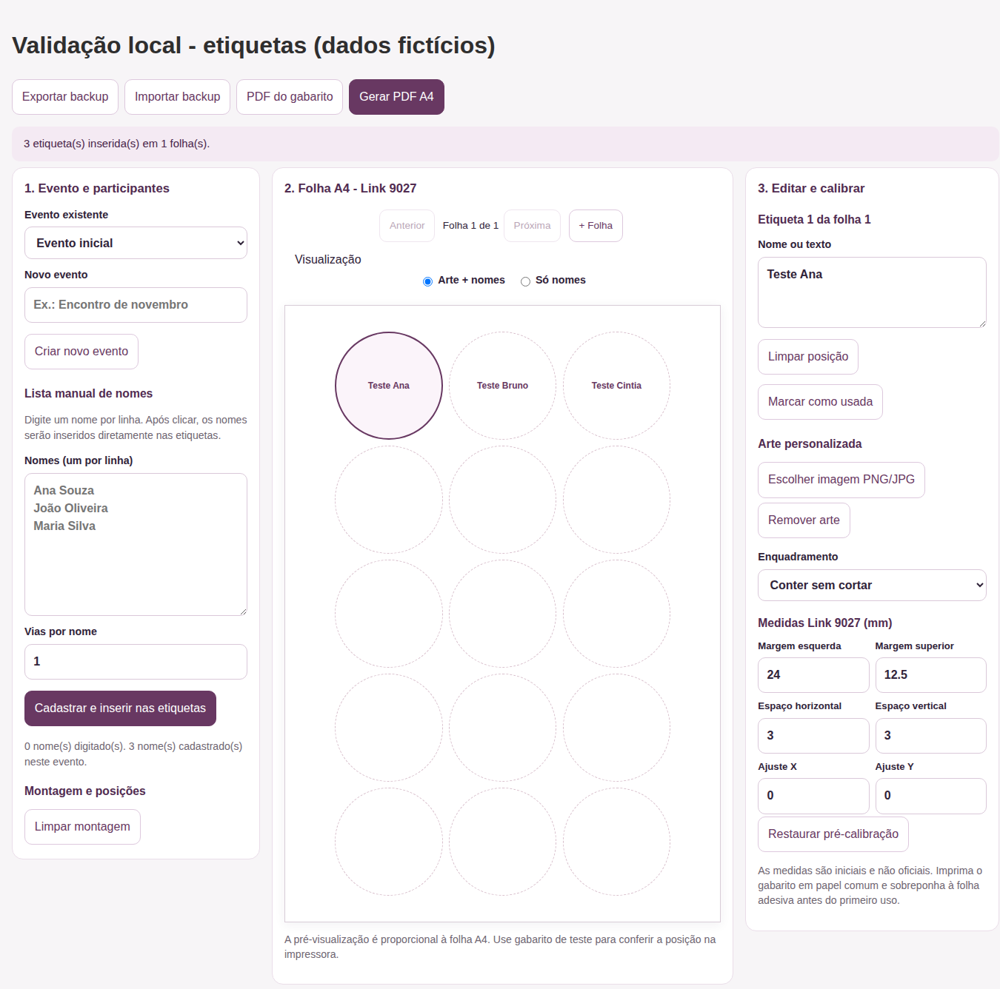
PRINT: etiquetas 3 nomes. Captura proveniente de teste de interface com dados fictícios.
Print real de teste da versão candidata de etiquetas; nomes inteiramente fictícios.
ETIQUETAS • PRIORIDADE 1
02. Etiquetas: montar mais de uma folha A4
CAMINHO NA INTERFACE /etiquetas
Cadastre mais de 15 nomes ou insira novas vias. O sistema deve criar automaticamente a segunda folha.
No topo da pré-visualização, use Anterior e Próxima para navegar entre as folhas.
Confirme que cada folha contém 3 colunas por 5 linhas, com 15 posições de 52 mm.
Para acrescentar uma folha vazia, selecione + Folha.
As posições marcadas USADA não devem ser reaproveitadas pela inserção automática.
Revise os nomes da última folha antes de gerar o PDF e conferir o número total de páginas.
RESULTADO ESPERADO Com 16 etiquetas em uma montagem nova, o resultado esperado são duas folhas, sendo a segunda com uma etiqueta.
ATENÇÃO Não confundir o número de participantes únicos com o número total de etiquetas quando há várias vias por pessoa.
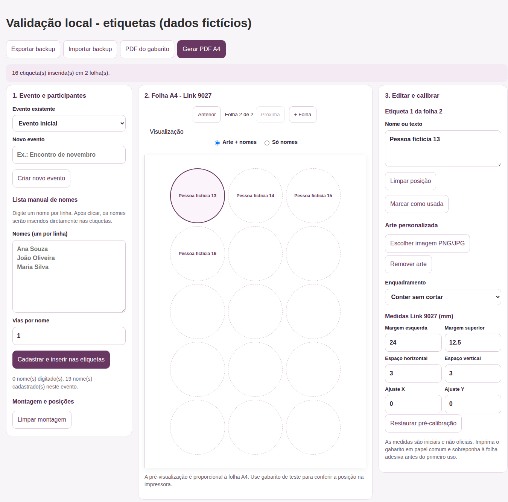
PRINT: etiquetas 16 nomes. Captura proveniente de teste de interface com dados fictícios.
Print real de teste local com preenchimento fictício em múltiplas folhas.
ETIQUETAS • PRIORIDADE 1
03. Etiquetas: editar, escolher arte e calibrar
CAMINHO NA INTERFACE /etiquetas
Clique no círculo que deseja alterar; a coluna Editar e calibrar indica o número da etiqueta e a folha.
Altere o campo Nome ou texto e confira a mudança na prévia.
Use Limpar posição para liberar o círculo; Marcar como usada preserva o espaço sem impressão.
Para inserir a arte personalizada, clique em Escolher imagem PNG/JPG e selecione o arquivo.
Escolha Conter sem cortar para preservar a arte inteira ou Preencher e recortar para ocupar o círculo.
Revise as medidas em milímetros: margem esquerda, superior, espaçamento horizontal/vertical e ajustes X/Y.
Use Restaurar pré-calibração quando necessário e faça uma impressão de teste sobreposta à folha adesiva.
RESULTADO ESPERADO A arte e os nomes precisam ficar inteiros dentro de cada círculo, sem corte nas bordas.
ATENÇÃO Valores padrão são estimados: 24 mm à esquerda, 12,5 mm acima e 3 mm de espaçamento. A folha real precisa de prova física.
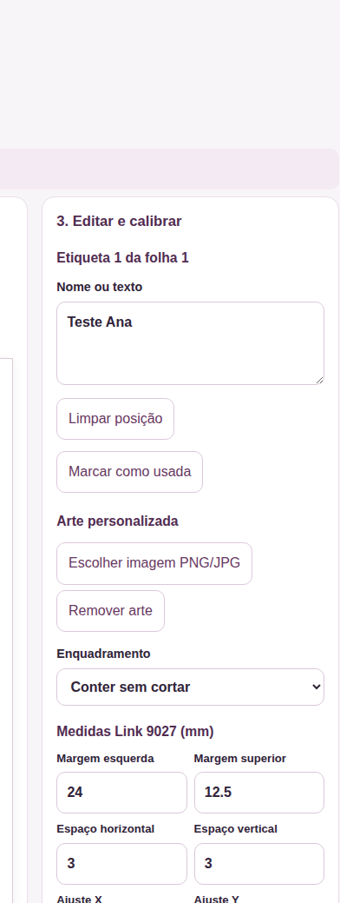
PRINT: etiquetas painel edicao. Captura proveniente de teste de interface com dados fictícios.
Print real da área de edição na interface candidata, recortado para facilitar a leitura.
ETIQUETAS • PRIORIDADE 1
04. Etiquetas: gerar PDF e imprimir corretamente
CAMINHO NA INTERFACE /etiquetas
Confirme na prévia todos os nomes e a quantidade de folhas.
Clique em PDF do gabarito e imprima primeiro em papel comum, sem etiquetas adesivas.
No diálogo de impressão, escolha papel A4, escala 100% ou Tamanho real e desative “Ajustar à página”.
Sobreponha a impressão à folha Link 9027 contra a luz para conferir o alinhamento de todos os círculos.
Se houver deslocamento, volte às medidas X/Y e refaça o gabarito.
Clique em Gerar PDF A4, depois Baixar PDF A4 ou Abrir PDF / imprimir.
Imprima apenas depois de validar o gabarito; a impressão real depende das margens da impressora e do modelo físico.
RESULTADO ESPERADO O arquivo final deve ser um PDF A4 de 210 × 297 mm; o teste com três nomes gerou uma página íntegra.
ATENÇÃO Use uma impressora que aceite folhas A4. A Zebra térmica de etiquetas não é apropriada para folhas A4 Link 9027.
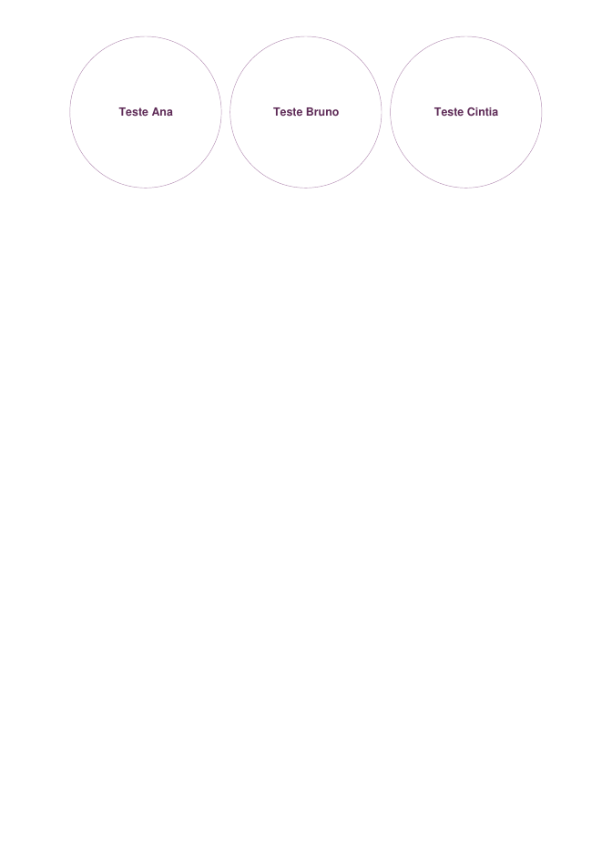
PRINT: etiquetas pdf a4. Captura proveniente de teste de interface com dados fictícios.
Imagem derivada do PDF A4 efetivamente gerado e baixado em teste de interface.
ETIQUETAS • PRIORIDADE 1
05. Etiquetas no celular e cópia de segurança
CAMINHO NA INTERFACE /etiquetas
No celular, entre no endereço do aplicativo autenticado quando a publicação estiver liberada.
Desça até Nomes (um por linha), preencha e pressione Cadastrar e inserir nas etiquetas.
Role para verificar a prévia e, em seguida, pressione Gerar PDF A4.
Use Abrir PDF / imprimir para a opção de compartilhamento/impressão do aparelho ou Baixar PDF A4 para salvar.
Use Exportar backup para guardar eventos, textos e montagem em arquivo privado.
Use Importar backup ao trocar de navegador ou dispositivo, somente com arquivo confiável.
Não feche a aba antes de confirmar que o backup foi salvo; listas locais não são sincronizadas entre dispositivos.
RESULTADO ESPERADO A UI móvel deve permitir cadastro e prévia sem exigir zoom horizontal. Teste sintético no viewport 390×844 passou.
ATENÇÃO O link provisório ainda não deve receber nomes reais até o login com senha estar implantado.
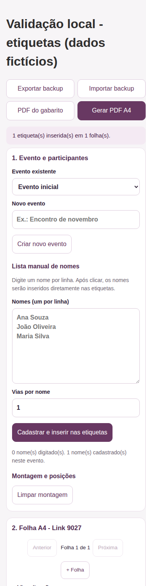
PRINT: etiquetas celular parte superior. Captura proveniente de teste de interface com dados fictícios.
Captura real da interface candidata em viewport móvel.
CONSULTÓRIO • ACESSO
06. Entrar no Solange Consultório
CAMINHO NA INTERFACE /login
Abra somente o endereço oficial do consultório comunicado pela administração.
Na tela Entrar no consultório, informe Usuário ou e-mail e sua Senha individual.
Pressione Entrar; aguarde a abertura do Dashboard.
Confira o menu lateral e o perfil autorizado. Os acessos podem variar entre profissional, secretaria e contabilidade.
Se a senha falhar, use o fluxo de suporte/recuperação autorizado; não use credenciais de outro colaborador.
Ao sair do expediente, pressione Sair e feche a aba em computadores compartilhados.
RESULTADO ESPERADO Após login válido, o sistema redireciona ao Dashboard e exibe apenas as funções do seu perfil.
ATENÇÃO O usuário provisório “solange” das etiquetas é separado da autenticação do consultório; não reutilize senhas sem a migração autorizada.
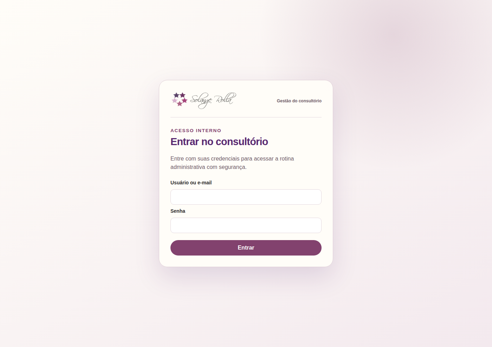
PRINT: 00 login. Captura proveniente de teste de interface com dados fictícios.
Tela do ambiente de homologação - dados de demonstração.
CONSULTÓRIO • INÍCIO
07. Dashboard: conferir a operação do dia
CAMINHO NA INTERFACE /dashboard
Clique em Início no menu lateral.
Confira os cartões de próximas consultas, saldo a receber, número de eventos e pacientes cadastrados.
Revise as tarefas e indicadores de atenção que estejam disponíveis no ambiente.
Para conferir uma consulta, acesse Agenda. Para conferir um valor, abra Financeiro.
Para participantes e vagas, acesse Eventos. Para atualizar um cadastro, entre em Pacientes.
Atualize a página após uma alteração importante e confirme a atualização dos indicadores.
RESULTADO ESPERADO Os valores apresentados são indicadores derivados de registros reais do ambiente; não são campos editáveis no Dashboard.
ATENÇÃO Captura do ambiente de demonstração: números são sintéticos e não representam a atividade comercial da cliente.
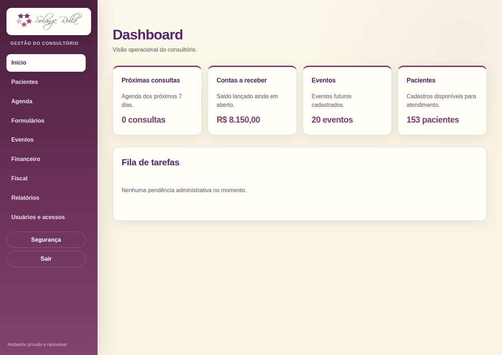
PRINT: dashboard. Captura proveniente de teste de interface com dados fictícios.
Tela do ambiente de homologação - dados de demonstração.
CONSULTÓRIO • PACIENTES
08. Pacientes: pesquisar antes de cadastrar
CAMINHO NA INTERFACE /pessoas
Abra Pacientes no menu lateral.
Use o campo Buscar paciente para pesquisar pelo nome de demonstração ou identificador permitido.
Confira os resultados listados e selecione Abrir ficha da pessoa correta.
Na ficha, examine contato, próxima/última consulta, responsáveis, documentos e preferências.
Se não houver registro, clique em Novo paciente para iniciar o cadastro.
Evite cadastrar a mesma pessoa duas vezes: pacientes, participantes e pagadores compartilham a entidade Pessoa.
RESULTADO ESPERADO Uma pesquisa deve mostrar a pessoa existente ou informar que nenhum resultado foi encontrado.
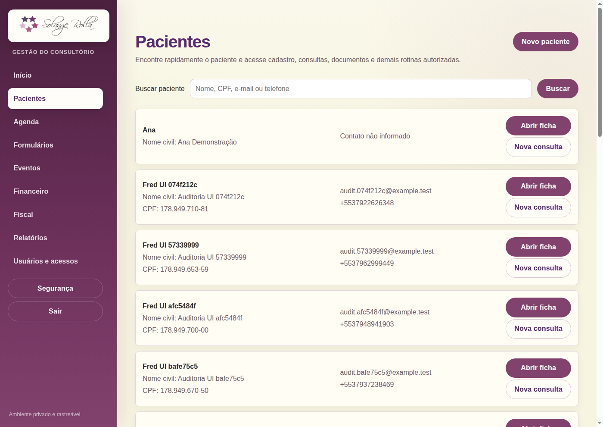
PRINT: pacientes. Captura proveniente de teste de interface com dados fictícios.
Tela do ambiente de homologação - dados de demonstração.
CONSULTÓRIO • PACIENTES
09. Pacientes: criar um novo cadastro
CAMINHO NA INTERFACE /pessoas/nova
No menu Pacientes, clique em Novo paciente.
Em Identificação, preencha nome civil, nome preferido (se aplicável) e data de nascimento.
Informe CPF apenas quando aplicável; revise o formato e evite duplicidade com outro cadastro.
Em Contato, preencha e-mail e telefone/WhatsApp com dados autorizados.
Selecione o Canal preferido e as preferências de comunicação conforme consentimento da pessoa.
Complete endereço e dados fiscais quando necessários para faturamento/NFS-e.
Salve o cadastro e confira a ficha resultante antes de criar a consulta.
RESULTADO ESPERADO A ficha deve ser criada sem duplicação silenciosa; o sistema valida CPF e meios de contato.
ATENÇÃO Se aparecer mensagem de CPF, telefone ou e-mail já existente, volte à lista e encontre o cadastro correto.
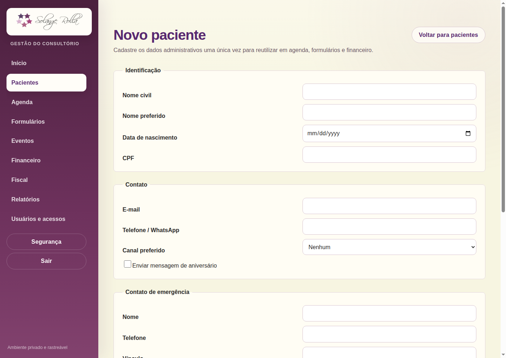
PRINT: novo paciente. Captura proveniente de teste de interface com dados fictícios.
Tela do ambiente de homologação - dados de demonstração.
CONSULTÓRIO • PACIENTES
10. Pacientes: contato, emergência e dados fiscais
CAMINHO NA INTERFACE /pessoas/nova
No cadastro novo ou em Editar cadastro, confira e-mail, telefone e canal preferencial.
Informe contato de emergência apenas se necessário, incluindo nome, telefone e relação.
Se houver campos fiscais, complete rua, número, cidade, UF, CEP e dados solicitados.
Defina se a pessoa autorizou a comunicação de aniversário e mensagens administrativas.
Salve e revise os dados apresentados na ficha.
Para associar um responsável financeiro, legal ou tomador fiscal, utilize Responsáveis e vínculos na ficha.
RESULTADO ESPERADO Os vínculos devem apontar para um cadastro já existente e não substituir os dados pessoais da pessoa atendida.
ATENÇÃO Acesso ao prontuário é separado do cadastro administrativo e requer permissão clínica.
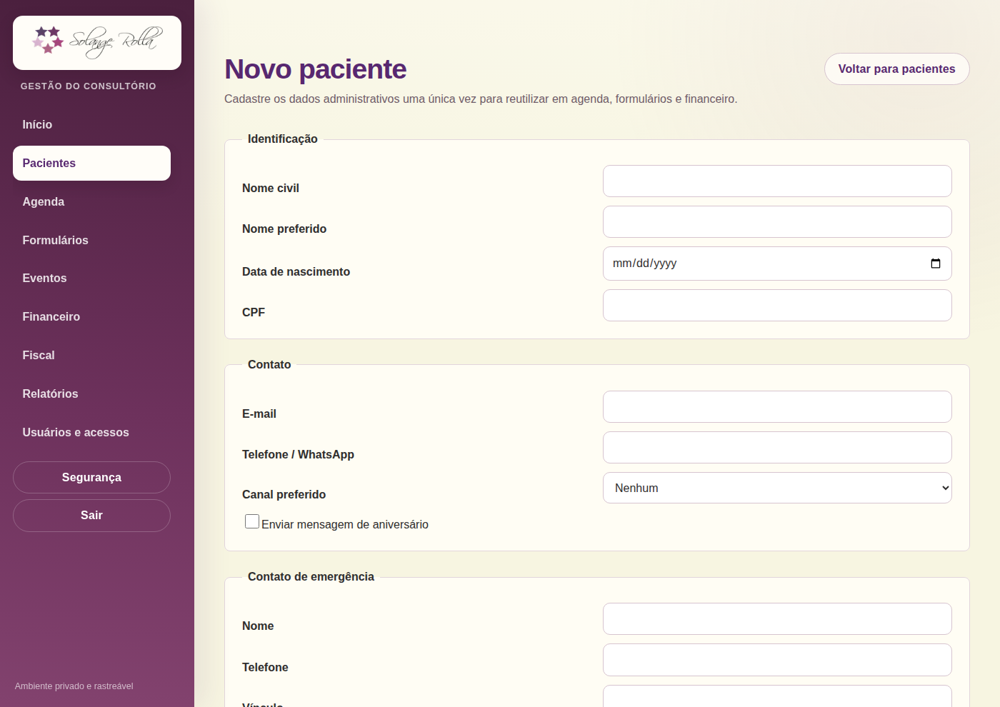
PRINT: novo paciente contato. Captura proveniente de teste de interface com dados fictícios.
Tela do ambiente de homologação - dados de demonstração.
CONSULTÓRIO • CONSULTAS
11. Agenda: visualizar dia, semana e mês
CAMINHO NA INTERFACE /agenda
Abra Agenda.
Escolha Dia, Semana ou Mês no cabeçalho.
Ajuste a data de referência para o período que deseja verificar.
Observe as consultas e respectivos estados, conforme a visualização autorizada.
Clique em Nova consulta quando precisar marcar horário.
Para consultar dados de uma pessoa, abra a ficha do paciente pelo fluxo disponível.
RESULTADO ESPERADO Se o período estiver vazio, a tela informa que não há consultas; isso não significa falha do sistema.
ATENÇÃO As datas e horas seguem o horário de São Paulo.
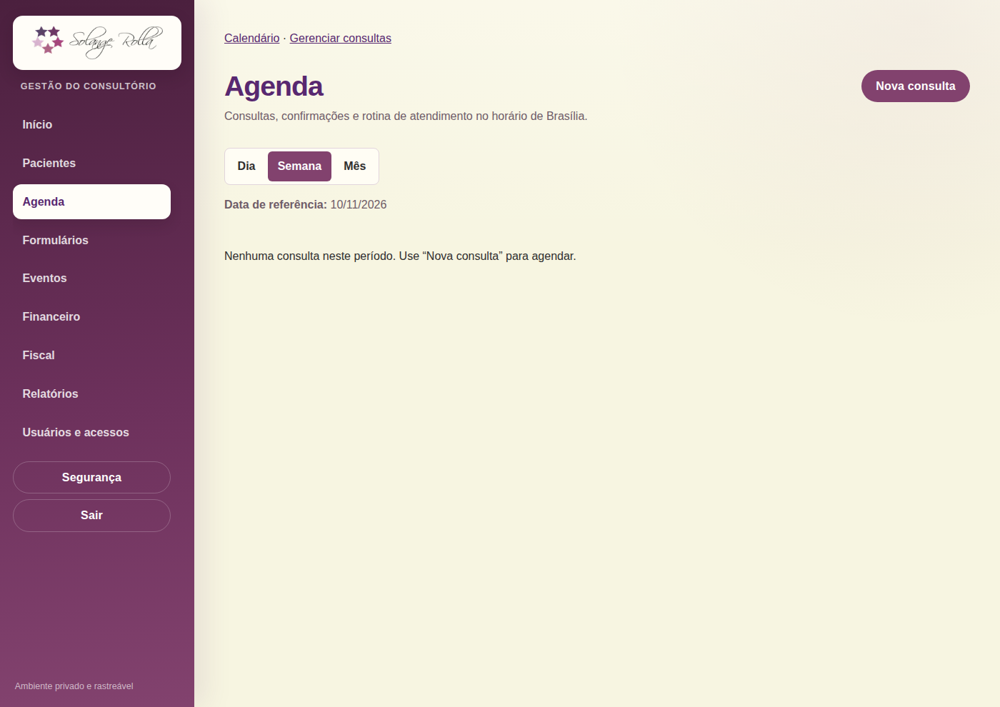
PRINT: agenda. Captura proveniente de teste de interface com dados fictícios.
Tela do ambiente de homologação - dados de demonstração.
CONSULTÓRIO • CONSULTAS
12. Agenda: cadastrar serviço e marcar consulta
CAMINHO NA INTERFACE /agenda/gerenciar
Na Agenda, selecione Nova consulta para abrir Gerenciar agenda.
Em Serviços, informe nome do serviço, duração em minutos e valor quando for preciso criar um tipo de atendimento.
Em Nova consulta, selecione o paciente cadastrado.
Escolha o serviço e preencha data e horário conforme os campos da tela.
Revise o valor do atendimento e a regra de cancelamento aplicável.
Pressione Criar consulta.
Volte à Agenda e confirme que o compromisso aparece na data e horário corretos.
RESULTADO ESPERADO Uma consulta válida deve surgir na agenda; horários proibidos por conflito devem ser recusados sem criar duplicidade.
ATENÇÃO Não marque uma consulta sem confirmar cadastro correto, duração e preço.
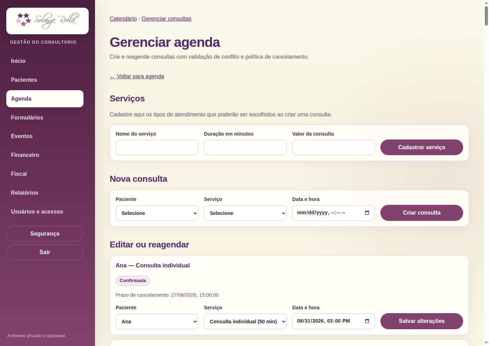
PRINT: gerenciar agenda. Captura proveniente de teste de interface com dados fictícios.
Tela do ambiente de homologação - dados de demonstração.
CONSULTÓRIO • CONSULTAS
13. Agenda: editar e reagendar um compromisso
CAMINHO NA INTERFACE /agenda/gerenciar
Abra Agenda → Nova consulta / Gerenciar agenda.
Localize a seção Editar ou reagendar.
Selecione o registro da consulta que precisa ser modificado.
Altere apenas os campos necessários: horário, serviço e outros permitidos pela interface.
Confirme a disponibilidade do novo horário e preserve o histórico do compromisso anterior.
Pressione Salvar alterações.
Volte à visão da Agenda e confira o estado resultante.
RESULTADO ESPERADO Reagendamentos devem preservar o histórico e recalcular condições aplicáveis; não exclua manualmente os registros antigos.
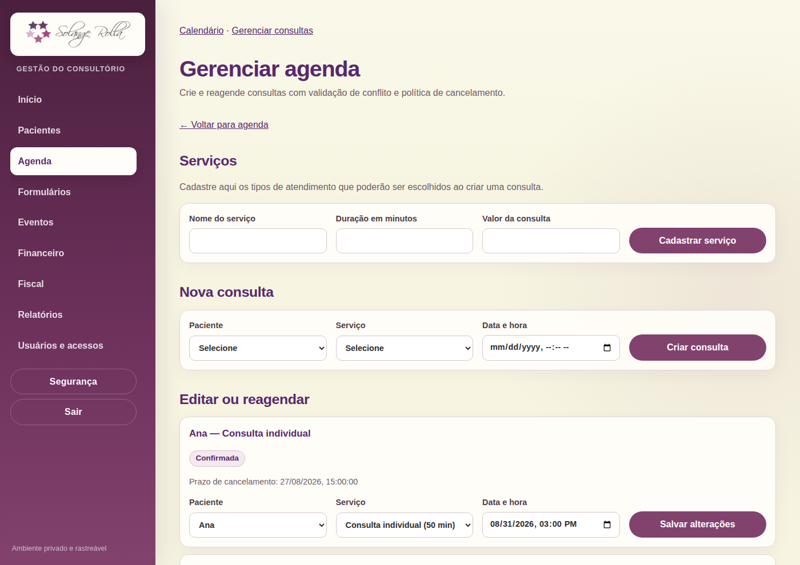
PRINT: agenda editar. Captura proveniente de teste de interface com dados fictícios.
Tela do ambiente de homologação - dados de demonstração.
CONSULTÓRIO • CONSULTAS
14. Confirmação, cancelamento e solicitação de novo horário
CAMINHO NA INTERFACE /consulta (link individual restrito)
Quando a pessoa receber o link seguro, ela verifica o compromisso, data e condições.
No link, pode selecionar Confirmar consulta, Solicitar reagendamento ou Cancelar consulta, conforme disponível.
Em reagendamento, a secretaria recebe a pendência e contata a pessoa antes de escolher outro horário.
Confira o resultado na Agenda e registre o novo horário pelo fluxo autorizado.
Antes de uma cobrança por falta ou cancelamento tardio, confira a versão da política aceita e o limite calculado.
Não presuma que o cancelamento altera automaticamente o saldo no Financeiro.
RESULTADO ESPERADO Política de cancelamento definida no projeto: 48 horas computáveis, sem contar sábados e domingos.
ATENÇÃO Os envios automáticos dependem de integração externa e não devem ser considerados ativos sem homologação.
CONSULTÓRIO • ATENDIMENTO
15. Iniciar atendimento e consultar prontuário
CAMINHO NA INTERFACE /atendimentos/[id] e /clinico/[id]
Na Agenda, abra a consulta da pessoa correta pelo link de atendimento, quando disponibilizado ao perfil.
Confira a seção Consulta atual e o estado do compromisso.
Se a pessoa estiver aguardando e a tela permitir, clique em Iniciar atendimento.
Consulte a seção Continuidade para referência da consulta anterior e próxima.
Em Atendimento de hoje, registre a evolução da sessão apenas no espaço clínico autorizado.
Revise o conteúdo antes de finalizar e confira o registro no histórico.
Para abrir o histórico completo, acesse Ficha do paciente → Abrir prontuário e confirme o MFA.
RESULTADO ESPERADO Acesso ao prontuário é exclusivo da profissional autorizada, com MFA/AAL2 e permissão clínica.
ATENÇÃO Não foram capturadas telas com prontuário clínico nem conteúdo de pacientes por proteção de sigilo.
CONSULTÓRIO • EVENTOS
16. Eventos: consultar agenda e vagas
CAMINHO NA INTERFACE /eventos
Acesse Eventos.
Observe título, data/hora, modalidade, capacidade, número de inscrições e preço do evento.
Selecione a aba ou link Operações para criar ou alterar dados.
Confira vagas disponíveis antes de confirmar uma inscrição.
Se houver evento com inscrição financeira, mantenha o status de pagamento e presença independentes.
Não use o aplicativo de etiquetas como fonte de verdade para inscrições; ele é um complemento de impressão.
RESULTADO ESPERADO A agenda de eventos apresenta números agregados, e os detalhes operacionais ficam em Operações de eventos.
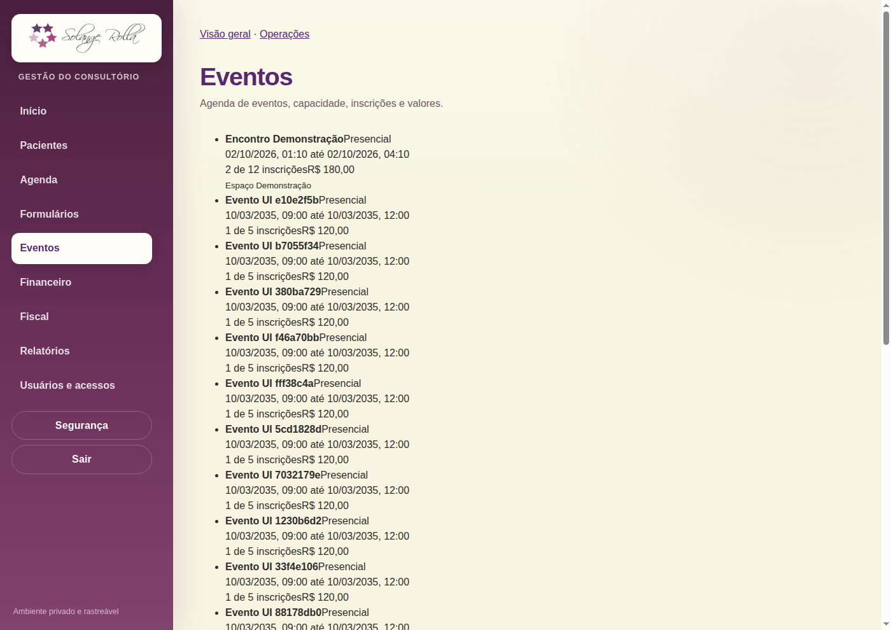
PRINT: eventos. Captura proveniente de teste de interface com dados fictícios.
Tela do ambiente de homologação - dados de demonstração.
CONSULTÓRIO • EVENTOS
17. Eventos: criar e configurar
CAMINHO NA INTERFACE /eventos/operacoes
Na tela Eventos → Operações de eventos, vá até Novo evento.
Informe Título, Descrição e Tipo.
Preencha Início, Fim, Local e Modalidade (presencial, on-line ou híbrido).
Informe Capacidade e Preço.
Confira as datas e clique em Criar evento.
Localize o cartão do evento na lista; nele você pode ajustar informações e clicar em Salvar evento.
RESULTADO ESPERADO O novo evento precisa aparecer na lista, com capacidade, data e preço corretos.
ATENÇÃO Teste em ambiente sintético; inscrições e despesas financeiras possuem processos próprios.
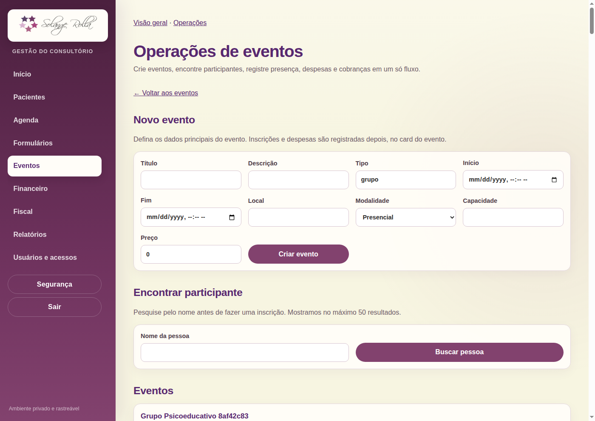
PRINT: operacoes eventos. Captura proveniente de teste de interface com dados fictícios.
Tela do ambiente de homologação - dados de demonstração.
CONSULTÓRIO • EVENTOS
18. Eventos: inscrição, pagamento pendente e presença
CAMINHO NA INTERFACE /eventos/operacoes
Utilize Encontrar participante para pesquisar pessoa pelo nome antes de operar a inscrição.
Se a pessoa não existir, abra Pacientes → Novo paciente e complete o cadastro.
Na seção Inscrições, localize o registro da pessoa e do evento.
Revise Status, usando o estado adequado (confirmado, aguardando pagamento, lista de espera etc.).
Atualize Presença para presente, ausente ou não marcada, conforme conferência do evento.
Salve o registro e retorne à visão de Eventos para conferir os totais.
RESULTADO ESPERADO Alterar status de inscrição não comprova recebimento financeiro. Verifique o lançamento em Financeiro.
ATENÇÃO A criação de uma nova inscrição pode depender do fluxo habilitado no ambiente.
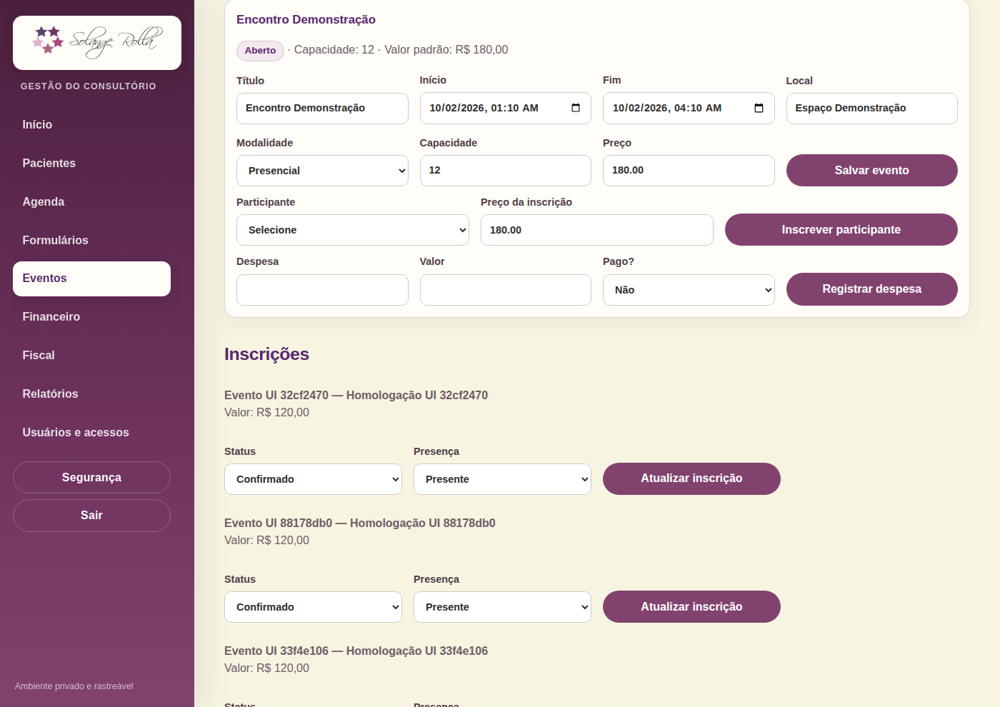
PRINT: eventos inscricoes. Captura proveniente de teste de interface com dados fictícios.
Tela do ambiente de homologação - dados de demonstração.
CONSULTÓRIO • EVENTOS
19. Eventos: cadastrar despesas e conferir resultado
CAMINHO NA INTERFACE /eventos/operacoes
Na página Operações de eventos, localize o evento correto.
Preencha o campo Despesa com uma descrição clara.
Preencha Valor em reais, conforme o formato aceito pela tela.
Marque Pago? somente se a despesa estiver efetivamente quitada.
Use Registrar despesa.
Verifique o item em Despesas registradas e depois confira o resultado agregado do evento.
RESULTADO ESPERADO Despesas de eventos e contas a pagar são processos relacionados, porém devem ser conferidos separadamente.
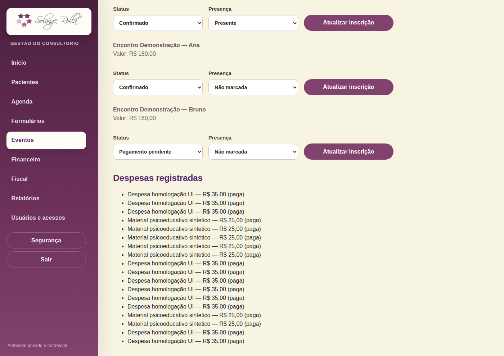
PRINT: eventos despesas. Captura proveniente de teste de interface com dados fictícios.
Tela do ambiente de homologação - dados de demonstração.
CONSULTÓRIO • FORMULÁRIOS
20. Formulários: criar modelo de pré-atendimento
CAMINHO NA INTERFACE /formularios
Abra Formulários.
Em Novo formulário, digite Nome do formulário.
Escolha a classificação Sensível ou Administrativa.
Para cada campo, informe Pergunta e selecione o Tipo.
Se houver opções de escolha, informe os textos separados por vírgula.
Marque Obrigatório somente nos campos que devem impedir envio sem resposta.
Clique em Criar formulário e confira se o modelo está disponível.
RESULTADO ESPERADO O modelo deve ser versionado; informações sensíveis exigem controles adicionais de armazenamento e acesso.
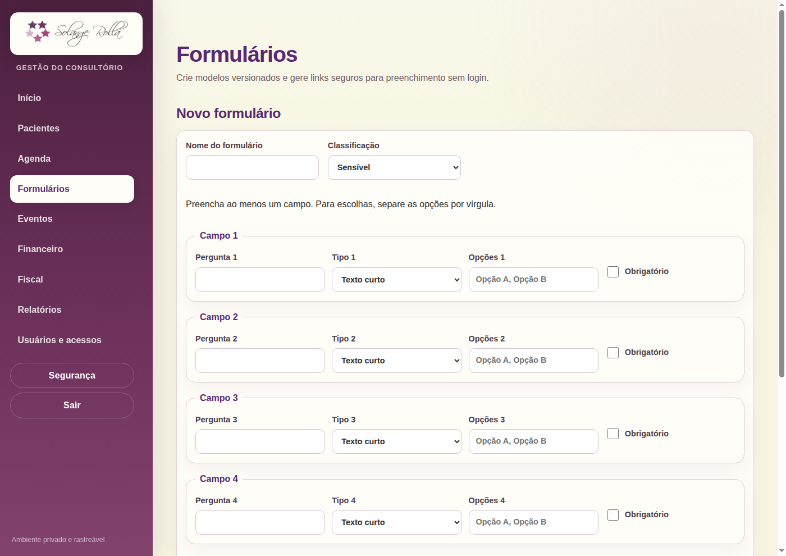
PRINT: formularios. Captura proveniente de teste de interface com dados fictícios.
Tela do ambiente de homologação - dados de demonstração.
CONSULTÓRIO • FORMULÁRIOS
21. Formulários: gerar link individual seguro
CAMINHO NA INTERFACE /formularios
Na mesma tela de Formulários, abra Gerar link seguro.
Selecione a versão do modelo disponível.
Selecione a pessoa correta no cadastro administrativo.
Clique na ação de gerar link e confira que a referência corresponde à pessoa e ao documento.
Entregue o endereço por canal autorizado, sem publicar o token em grupos ou relatórios.
Caso o link esteja inválido ou expirado, gere outro pelo procedimento oficial.
RESULTADO ESPERADO O destinatário recebe somente o acesso restrito ao formulário, não uma sessão administrativa do consultório.
ATENÇÃO Não capturar nem publicar tokens completos de formulário em prints do manual.
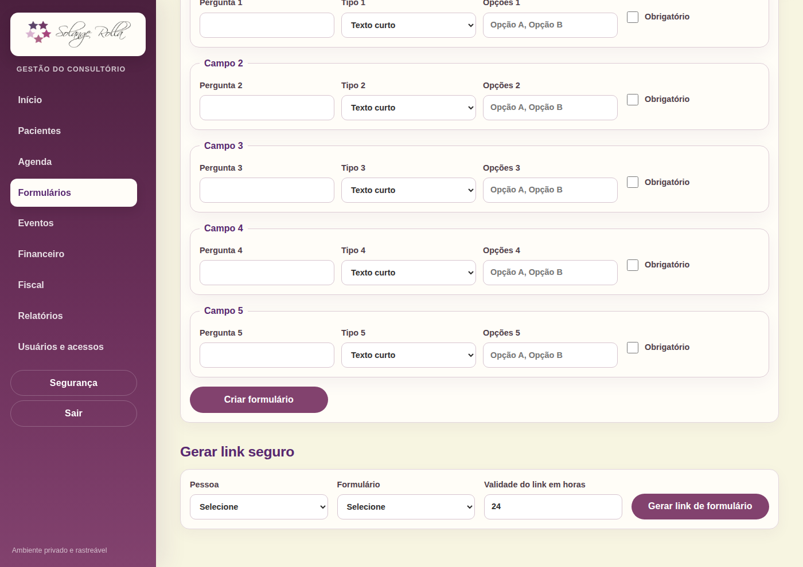
PRINT: formularios link. Captura proveniente de teste de interface com dados fictícios.
Tela do ambiente de homologação - dados de demonstração.
CONSULTÓRIO • FORMULÁRIOS
22. Pessoa: preencher, revisar e assinar formulário
CAMINHO NA INTERFACE /formulario → /formulario/revisao → /formulario/assinar
A pessoa acessa o link de formulário enviado pela equipe.
Preenche os campos e utiliza Salvar e continuar quando necessário.
Em Revisar respostas, confere informações e termos aplicáveis.
Se houver erro, usa Corrigir respostas e repete a revisão.
Avança a Termos e assinatura, lê a declaração e conclui a assinatura.
Confere a tela de Formulário enviado e assinado.
Em caso de Link indisponível, solicita à equipe um novo link, sem tentar reutilizar o anterior.
RESULTADO ESPERADO O documento assinado deve manter histórico, hash e versão; não é permitido editá-lo silenciosamente.
ATENÇÃO Capturas com tokens e respostas privadas foram omitidas do manual.
CONSULTÓRIO • FINANCEIRO
23. Financeiro: consultar contas a receber
CAMINHO NA INTERFACE /financeiro
Abra Financeiro.
Confira os indicadores Total lançado, Total recebido e Saldo a receber.
Localize o lançamento pelo nome da pessoa ou pagador e pelo estado.
Revise o valor original, o pago e o saldo restante antes de qualquer operação.
Abra Operações para registrar pagamentos, ajustes ou estornos quando houver permissão.
Depois de lançar uma operação, retorne ao painel e confirme o recálculo do saldo.
RESULTADO ESPERADO Agendamento, recebimento e emissão fiscal têm estados independentes. Uma consulta realizada não prova pagamento.
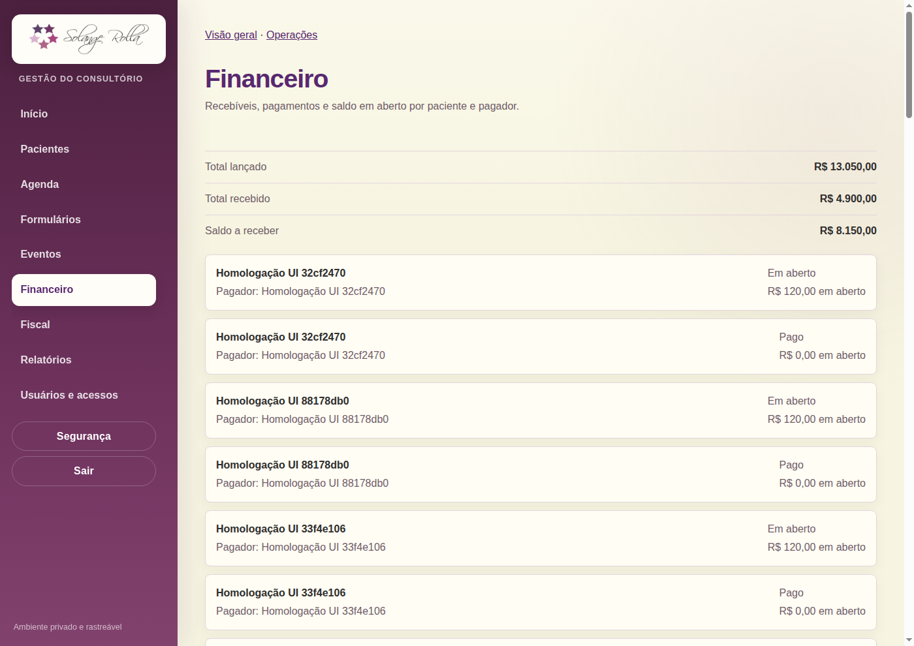
PRINT: financeiro. Captura proveniente de teste de interface com dados fictícios.
Tela do ambiente de homologação - dados de demonstração.
CONSULTÓRIO • FINANCEIRO
24. Financeiro: registrar pagamento, ajuste e estorno
CAMINHO NA INTERFACE /financeiro/operacoes
Na tela Operações financeiras, localize o recebível que será movimentado.
Para quitar total ou parcialmente, preencha os campos de Registrar pagamento (valor, método e demais dados).
Confirme uma única vez e confira o saldo resultante.
Quando necessário, preencha Aplicar ajuste com tipo, valor e justificativa.
Para estornar um pagamento já lançado, vá a Pagamentos e estornos.
Selecione o pagamento, informe valor, método e motivo; salve e confira o histórico.
RESULTADO ESPERADO O financeiro deve registrar trilha de auditoria; não repita ações antes de verificar se a gravação anterior foi efetivada.
ATENÇÃO Não usar dados bancários reais nem produzir transações live no ambiente de demonstração.
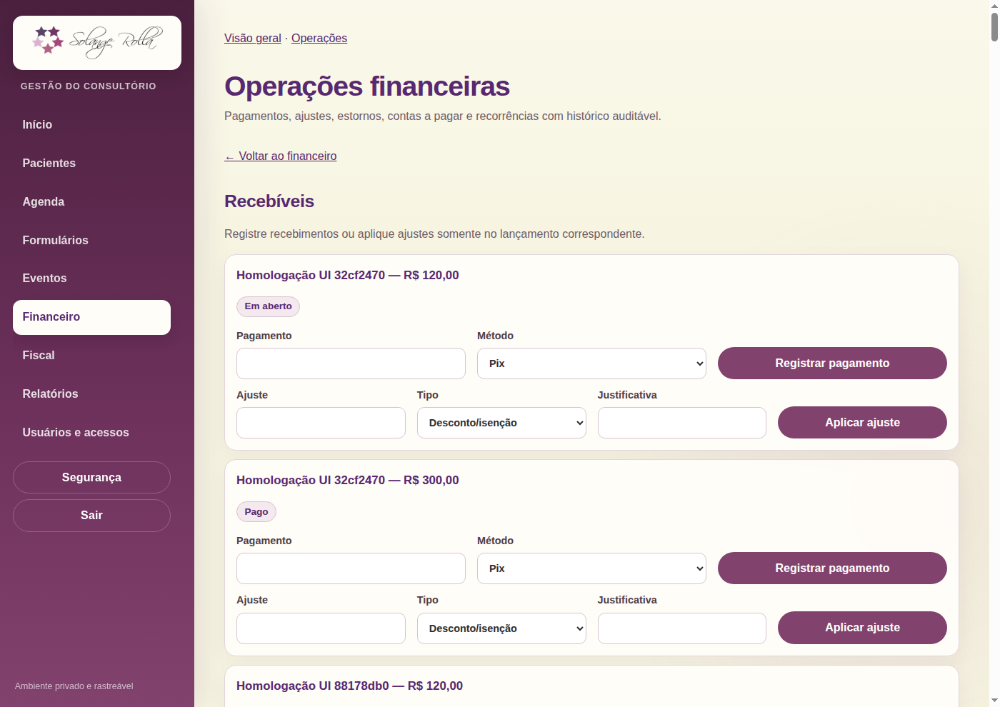
PRINT: operacoes financeiras. Captura proveniente de teste de interface com dados fictícios.
Tela do ambiente de homologação - dados de demonstração.
CONSULTÓRIO • FINANCEIRO
25. Contas a pagar: fornecedores, categorias e lançamentos
CAMINHO NA INTERFACE /financeiro/operacoes
Em Operações financeiras, localize Cadastros para despesas.
Cadastre o Fornecedor e a Categoria usados na nova despesa.
Em Nova conta a pagar, selecione fornecedor e categoria.
Informe descrição, valor, vencimento e competência.
Crie o lançamento e localize o item em Contas a pagar.
Quando houver quitação efetiva, pressione Registrar baixa e confira o estado atualizado.
RESULTADO ESPERADO Lançamento de despesa e comprovação de pagamento são etapas distintas.
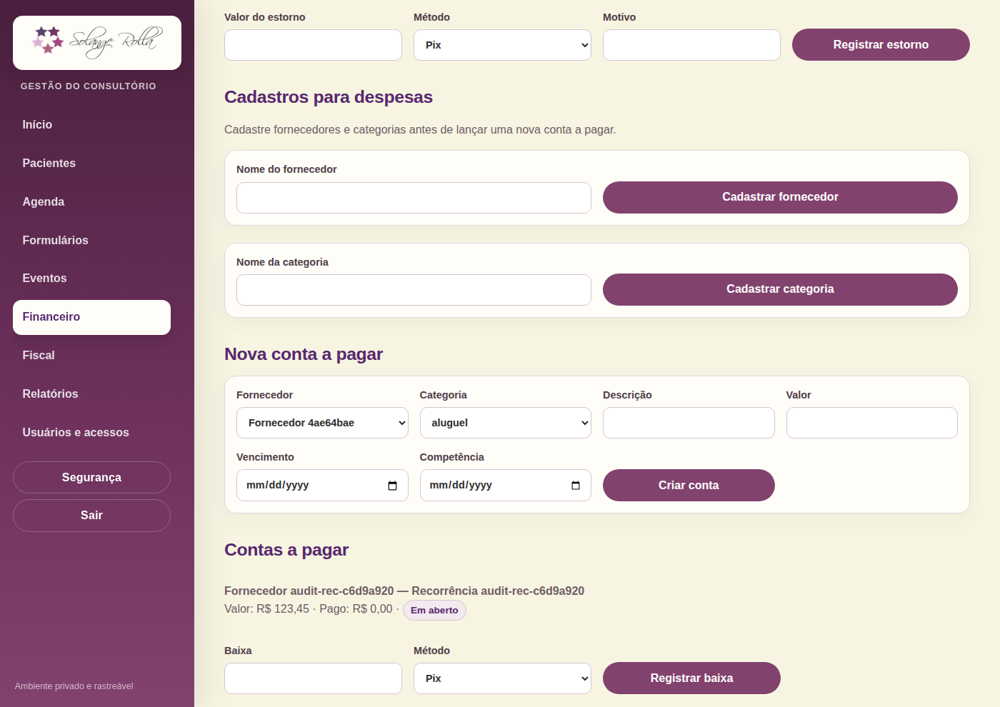
PRINT: financeiro pagar. Captura proveniente de teste de interface com dados fictícios.
Tela do ambiente de homologação - dados de demonstração.
CONSULTÓRIO • FINANCEIRO
26. Contas a pagar: despesas recorrentes
CAMINHO NA INTERFACE /financeiro/operacoes
Na seção Nova recorrência, selecione fornecedor e categoria.
Informe descrição, valor e o Início da recorrência.
Escolha o Dia do mês e, se aplicável, o Fim do mês ou data final.
Revise se já existe recorrência igual para não duplicar obrigações.
Clique em Criar recorrência e confira os lançamentos futuros permitidos.
Concilie cada pagamento quando efetivamente ocorrer.
RESULTADO ESPERADO Uma recorrência não equivale ao pagamento de todas as parcelas. A geração automática depende do job autorizado.
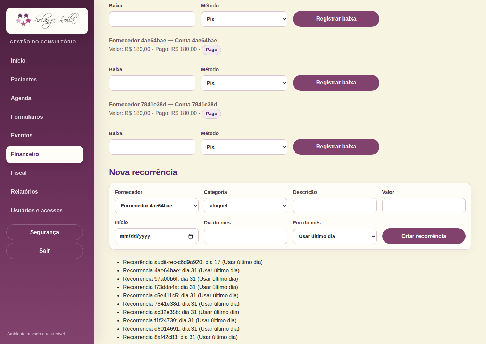
PRINT: financeiro recorrencias. Captura proveniente de teste de interface com dados fictícios.
Tela do ambiente de homologação - dados de demonstração.
CONSULTÓRIO • FISCAL
27. Fiscal: conferir fila e dados obrigatórios
CAMINHO NA INTERFACE /fiscal
Abra Fiscal.
Confira Fila de operação, quantidade de documentos pendentes e emitidos.
Confira a seção Proteção de documentos para entender a privacidade dos XML/PDF.
Se um documento estiver com falha ou pendência, confira primeiro os dados fiscais da pessoa e do tomador.
Acesse Homologação fiscal somente para o fluxo de teste simulado.
Encaminhe casos de emissão real à contabilidade responsável antes de habilitar integrações.
RESULTADO ESPERADO O ambiente demonstrado é de homologação, não de autorização para NFS-e real.
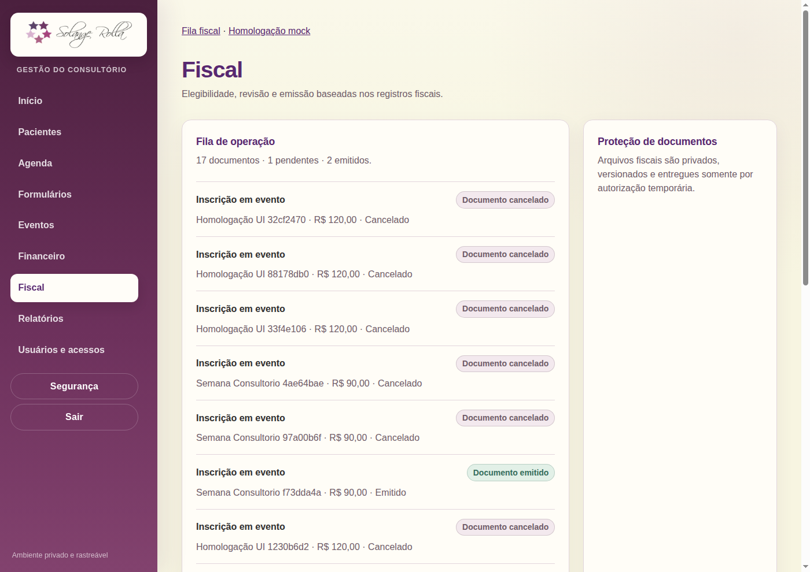
PRINT: fiscal. Captura proveniente de teste de interface com dados fictícios.
Tela do ambiente de homologação - dados de demonstração.
CONSULTÓRIO • FISCAL
28. Fiscal: simular uma NFS-e de forma segura
CAMINHO NA INTERFACE /fiscal/operacoes
Em Homologação fiscal, confira Prontidão para emissão.
Na seção Solicitar NFS-e sintética, selecione Origem e informe ID de origem de teste.
Escolha Paciente, Tomador/pagador e Valor.
Confira Perfil fiscal e Tratamento.
Marque a revisão explícita dos campos e clique em Emitir NFS-e mock.
Confira o status no quadro Documentos e registre divergências para correção.
Se aplicável, teste o cancelamento mock informando um motivo.
RESULTADO ESPERADO Somente o provedor simulado é usado na tela. Nenhuma nota real deve ser transmitida ou cancelada por este roteiro.
ATENÇÃO Antes da emissão real, devem estar concluídas aprovações fiscais, jurídicas e técnicas.
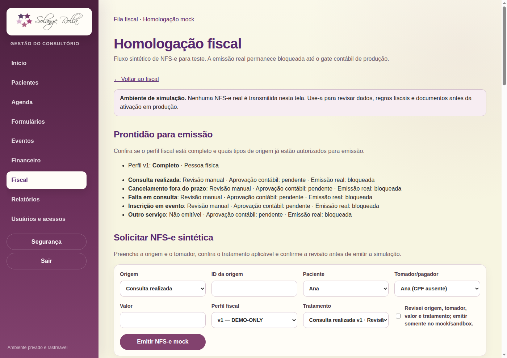
PRINT: fiscal homologacao. Captura proveniente de teste de interface com dados fictícios.
Tela do ambiente de homologação - dados de demonstração.
CONSULTÓRIO • FISCAL
29. Fiscal: conferir documentos e cancelamento de teste
CAMINHO NA INTERFACE /fiscal/operacoes
Localize a seção Documentos dentro de Homologação fiscal.
Confira a origem da operação, pessoa, tomador, valor e status.
Se a emissão de teste estiver concluída, expanda os detalhes técnicos quando necessário.
Na versão mock, use Cancelar NFS-e mock quando a ação estiver habilitada.
Informe o motivo exigido e confira a mudança de status.
Não utilize protocolos e documentos de teste para prestação de contas real.
RESULTADO ESPERADO Os arquivos fiscais precisam permanecer privados; não copie XML, PDF ou protocolos para um local público.
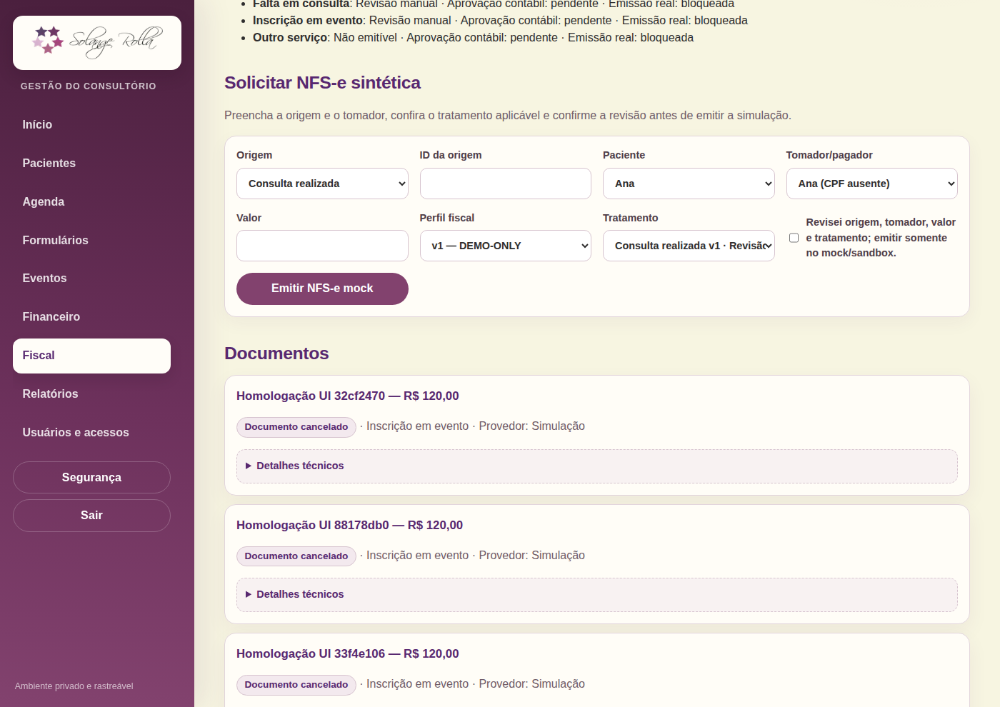
PRINT: fiscal documentos. Captura proveniente de teste de interface com dados fictícios.
Tela do ambiente de homologação - dados de demonstração.
CONSULTÓRIO • RELATÓRIOS
30. Relatórios: interpretar indicadores
CAMINHO NA INTERFACE /relatorios
Acesse Relatórios pelo menu.
Observe o período indicado na página.
Em Financeiro, verifique realizado, projetado e recebíveis vencidos.
Em Agenda, confira total de consultas, realizadas, pendentes de confirmação e faltas.
Em Eventos, confira participação e resultados agregados por evento.
Em Fiscal, confira emitidos, pendentes, falhas e valor emitido.
Use Exportar relatórios para baixar uma cópia administrativa do período.
RESULTADO ESPERADO O relatório agrega registros operacionais. Não contém prontuários nem conteúdo clínico.
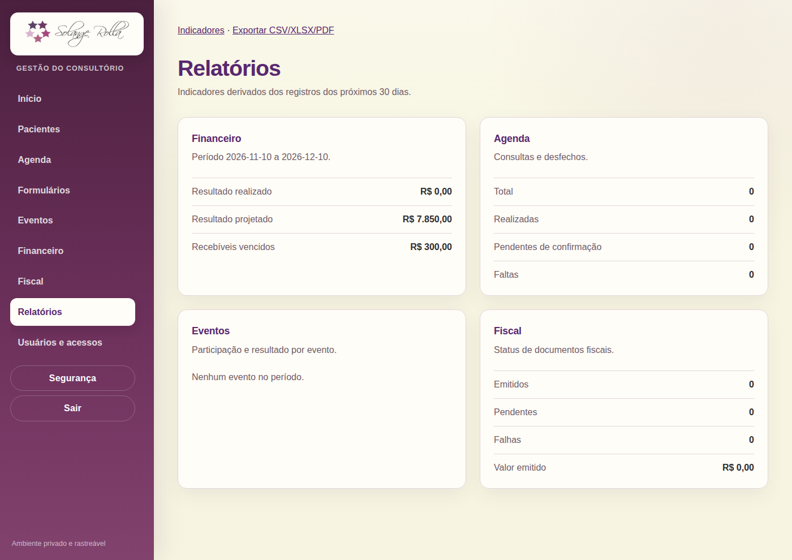
PRINT: relatorios. Captura proveniente de teste de interface com dados fictícios.
Tela do ambiente de homologação - dados de demonstração.
CONSULTÓRIO • RELATÓRIOS
31. Relatórios: exportar CSV, XLSX e PDF
CAMINHO NA INTERFACE /relatorios/baixar
Abra Relatórios → Exportar relatórios.
Preencha o campo Início com a data inicial do intervalo.
Preencha Fim com a data final.
Escolha Baixar CSV para dados tabulares simples.
Escolha Baixar XLSX para abrir a planilha em um aplicativo compatível.
Escolha Baixar PDF para um relatório de leitura.
Conferir o nome do arquivo e guardar a exportação apenas em local autorizado.
RESULTADO ESPERADO O arquivo deve respeitar o período e conter somente dados administrativos autorizados.
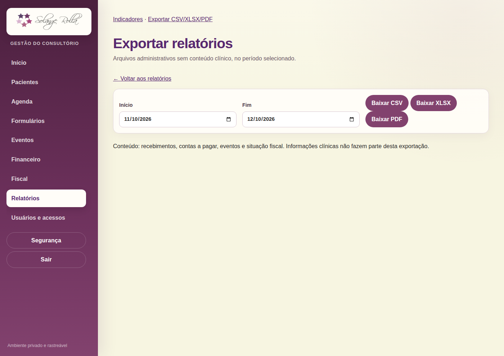
PRINT: relatorios exportar. Captura proveniente de teste de interface com dados fictícios.
Tela do ambiente de homologação - dados de demonstração.
CONSULTÓRIO • USUÁRIOS
32. Usuários: convidar e alterar permissões
CAMINHO NA INTERFACE /usuarios
Entre em Usuários e acessos com o perfil responsável.
Observe a equipe listada, funções atribuídas e estado ativo/inativo.
Para incluir colaborador, use Enviar convite ou Adicionar usuário, conforme a tela.
Informe nome, e-mail e Perfil-base adequado: secretaria, contabilidade ou profissional.
Confirme a operação e, se necessário, conclua a verificação de segurança solicitada.
No botão Gerenciar, revise os acessos individuais antes de salvar mudanças.
Desative contas de colaboradores que não devam mais ter acesso.
RESULTADO ESPERADO Permissão administrativa não implica permissão clínica. Revise sempre a menor permissão necessária.
ATENÇÃO Não compartilhar usuário, senha ou códigos MFA.
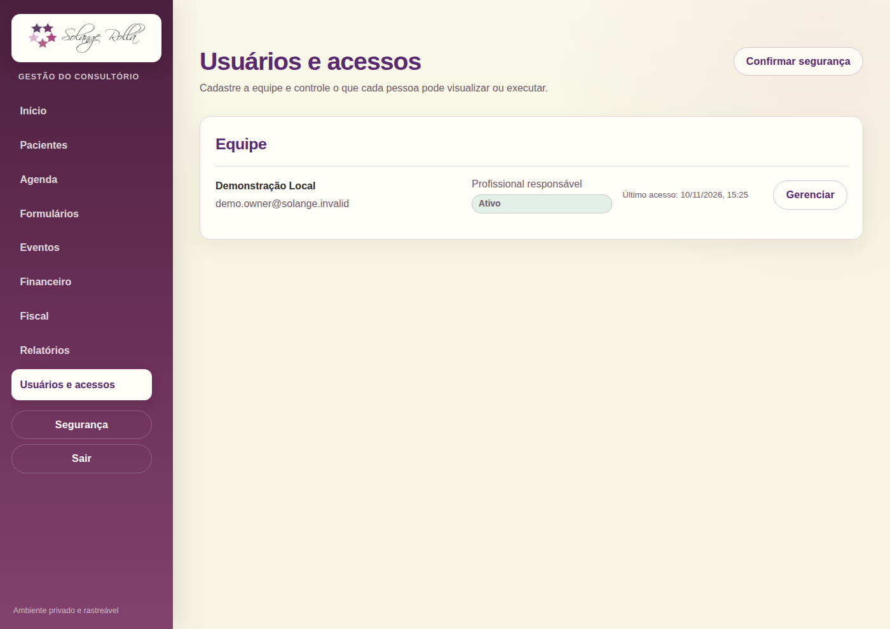
PRINT: usuarios. Captura proveniente de teste de interface com dados fictícios.
Tela do ambiente de homologação - dados de demonstração.
CONSULTÓRIO • SEGURANÇA
33. Segurança da conta e MFA
CAMINHO NA INTERFACE /seguranca
Clique em Segurança no menu lateral.
Leia as orientações de Autenticação em duas etapas.
Abra o aplicativo autenticador já cadastrado conforme instruções da organização.
Informe o Código de 6 dígitos atual quando solicitado.
Confirme a verificação para acessar o conteúdo clínico autorizado.
Ao trocar de aparelho ou perder o autenticador, solicite recuperação pela rota oficial, sem revelar códigos.
Ao finalizar, use Sair para encerrar sua sessão.
RESULTADO ESPERADO É proibido contornar MFA compartilhando contas ou usando sessões de outra pessoa.
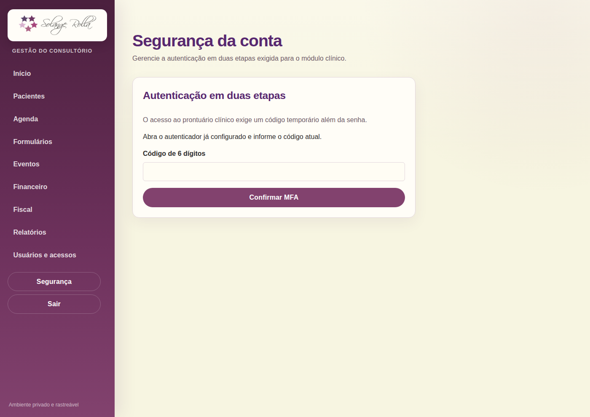
PRINT: seguranca. Captura proveniente de teste de interface com dados fictícios.
Tela do ambiente de homologação - dados de demonstração.
CONSULTÓRIO • COMUNICAÇÃO
34. Comunicações: preferências e falhas
CAMINHO NA INTERFACE Preferências na ficha da pessoa / Mensageria se habilitada
Abra a ficha do paciente/participante e confirme e-mail, telefone e canal preferido.
Respeite as preferências de recebimento de mensagens e a autorização para aniversários.
Para confirmações de consulta, verifique se a mensagem foi de fato emitida pelo provedor configurado.
Quando houver falha de WhatsApp/e-mail, registre data, módulo e status operacional sem expor o conteúdo.
Use a página Mensageria somente quando estiver liberada; na demonstração capturada, a rota direta não estava acessível.
Não reenvie várias vezes sem verificar a trilha, para evitar mensagens duplicadas.
RESULTADO ESPERADO Mensageria e lembretes automáticos dependem de credenciais, templates e flags de integração live.
CONSULTÓRIO • ROTINA
35. Roteiro diário, semanal e mensal de trabalho
Início do dia: verificar o Dashboard, os horários na Agenda e confirmações pendentes.
Antes de atender: conferir ficha da pessoa, formulário e documentos vinculados; observar permissão clínica.
Durante o atendimento: abrir somente a consulta e o prontuário corretos, com MFA.
Após o atendimento: concluir o registro permitido e conferir a agenda da próxima sessão.
Para eventos: verificar inscritos, lista de presença, despesas e providenciar etiquetas quando o módulo autenticado estiver liberado.
No financeiro: conferir recebimentos, saldos pendentes, contas a pagar e eventual cobrança autorizada.
No fiscal: revisar dados e pendências sem iniciar emissão real não homologada.
No fim do dia: exportar documentos/backup permitidos, guardar em local privado e encerrar sessão.
RESULTADO ESPERADO Semanalmente: revisar pendências por módulo. Mensalmente: conferir relatórios, recebíveis, contas a pagar, notas e permissões.
CONSULTÓRIO • APOIO
36. Dificuldades frequentes e segurança dos dados
Não aparece um botão: confira perfil, permissões e se o módulo foi publicado no seu ambiente.
Não consigo entrar: verifique a URL oficial, usuário e senha; não use a conta provisória das etiquetas.
Cadastro duplicado: pesquise por nome, CPF, telefone ou e-mail antes de criar outro registro.
Consulta não aparece: confira a visualização Dia/Semana/Mês e a data selecionada.
Paciente não confirma: confira canal permitido, estado do envio e validade do link.
Etiquetas não entram na folha: use a versão corrigida, digite uma pessoa por linha e clique no botão de montagem automática.
PDF sai fora do círculo: imprima gabarito em A4/100%, ajuste margens X/Y e repita a sobreposição.
Fiscal não emite: no ambiente de homologação usa-se somente mock; não ative emissão real sem autorização.
RESULTADO ESPERADO Em solicitações ao suporte, envie módulo, horário, mensagem de erro e captura sem dados clínicos, senhas ou tokens.
CONTATOS E ENDEREÇOS
37. Links, acesso e estado das versões
CONSULTÓRIO: utilizar o endereço privado autorizado e comunicado pela responsável. Não houve homologação de um endereço público definitivo do aplicativo principal.
Estado de publicação em 10/11/2026: o gerador integrado à área protegida do consultório está implementado e testado localmente, mas ainda não estava homologado no ambiente publicado. O site provisório de etiquetas continuava sem login administrativo. Não incluir nomes reais de pacientes até essa situação mudar.
Para a homologação: repetir no ambiente publicado os fluxos da lista, imprimir a folha Link 9027 física em 100%, revisar perfis/permissões e substituir este manual pela edição final com prints do SHA homologado.